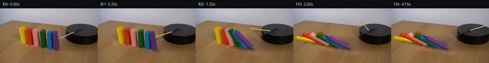

![首帧]()

Round 00
2026-11-04T23:05:09.364542+00:00像素候选变化代码 +246/−0inspection 更新
pixels aa7462734698b6fc · code 5cf2d3a965fa0620
查看本轮 generate.py 真实 diff
--- previous/generate.py
+++ current/generate.py
@@ -0,0 +1,246 @@
+"""Source-textured, locally rasterized continuation; no external renderer/model."""
+from pathlib import Path
+import json, math
+import cv2
+import numpy as np
+from PIL import Image, ImageDraw
+from scipy.ndimage import gaussian_filter
+from artifact_io import save
+
+ROOT=Path(__file__).resolve().parent
+S=4; W=256; HH=144
+source=np.array(Image.open(ROOT/'first_frame.png').convert('RGB'))
+# Each cuboid has four front/back bottom corners followed by corresponding tops.
+# Order: front left, front right, back right, back left.
+raw=[
+ ('yellow',[(56,91),(63,93),(68,90),(61,88)],[(49,52),(56,54),(64,49),(58,47)]),
+ ('orange',[(74,96),(81,98),(87,94),(79,92)],[(67,54),(75,56),(83,51),(75,50)]),
+ ('coral', [(90,99),(97,101),(105,96),(98,94)],[(84,58),(92,60),(100,54),(93,52)]),
+ ('green', [(109,102),(116,105),(122,100),(115,97)],[(104,60),(112,62),(119,57),(112,55)]),
+ ('blue', [(126,106),(133,109),(139,103),(132,100)],[(123,63),(130,65),(137,59),(129,57)]),
+ ('purple',[(143,110),(150,112),(156,106),(149,104)],[(135,66),(142,68),(150,61),(142,59)])]
+U=np.array([1.,.20]); Z=np.array([-.10,-.78])
+blocks=[]
+faces=[(0,1,5,4),(1,2,6,5),(4,5,6,7)]
+for name,base,top in raw:
+ q=np.array(base+top,np.float32)
+ hull=cv2.convexHull(q).reshape(-1,2)
+ mask=np.zeros((HH*S,W*S),np.uint8)
+ cv2.fillConvexPoly(mask,np.rint(hull*S).astype(np.int32),255)
+ mask=cv2.resize(mask,(W,HH),interpolation=cv2.INTER_AREA)/255.
+ # Source object edge reconstruction includes the small bevel beyond the quad.
+ mask=cv2.dilate(mask.astype(np.float32),np.ones((3,3),np.uint8))
+ tex=[]
+ for f in faces:
+ pts=q[list(f)]
+ dst=np.float32([[0,0],[63,0],[63,127],[0,127]])
+ mat=cv2.getPerspectiveTransform(pts,dst)
+ t=cv2.warpPerspective(source,mat,(64,128),flags=cv2.INTER_LINEAR,borderMode=cv2.BORDER_REPLICATE)
+ # Clamp samples to the interior to exclude antialiased table pixels.
+ t[:2]=t[2];t[-2:]=t[-3];t[:,:2]=t[:,2:3];t[:,-2:]=t[:,-3:-2]
+ tex.append(t)
+ height=float(np.mean(q[:4,1]-q[4:,1])/.78)
+ blocks.append(dict(name=name,q=q,mask=mask,tex=tex,h=height,w=7.,x=float(q[0,0])))
+
+# Remove the original rod using a thin mask, with separate surface-aware inpaint.
+rod_pivot=np.array([199.,60.]); rod_tip=np.array([153.,81.])
+rodmask=np.zeros((HH,W),np.uint8)
+cv2.line(rodmask,(194,62),(153,81),255,4,cv2.LINE_AA)
+rodmask=cv2.dilate(rodmask,np.ones((3,3),np.uint8))
+base_no_rod=cv2.inpaint(source,rodmask,3,cv2.INPAINT_TELEA)
+# Replacement tabletop grain: local patch from the same table below the setup.
+# Low frequencies follow nearby table illumination, high frequencies come from source grain.
+objmask=np.maximum.reduce([b['mask'] for b in blocks])
+solidmask=(objmask>.03).astype(np.uint8)*255
+plate=cv2.inpaint(base_no_rod,solidmask,5,cv2.INPAINT_TELEA).astype(float)
+yy,xx=np.mgrid[:HH,:W]
+donor=source[np.minimum(yy+53,HH-1),np.clip(xx+4,0,W-1)].astype(float)
+grain=donor-gaussian_filter(donor,(2,2,0))
+plate+=grain*.70*objmask[:,:,None]
+plate=np.clip(plate,0,255)
+# Reconstruct soft shadowed table around every old block, then blend it out only as it moves.
+shadow_masks=[]
+for b in blocks:
+ bx,by=b['q'][0]
+ m=np.exp(-(((xx-(bx+12))/16)**2+((yy-(by+7))/9)**2)/2)*.8
+ m*=1-objmask
+ shadow_masks.append(m)
+# Under shadows the source contains illumination falloff; lift modestly for cleared regions.
+oldshadow=np.maximum.reduce(shadow_masks)
+shadow_plate=np.minimum(plate+oldshadow[:,:,None]*np.array([23.,20.,15.]),255)
+
+start=np.array([1.59,1.30,1.01,.73,.44,.18])
+
+def poly_xz(b,angle):
+ u=np.array([0,b['w'],b['w'],0.]);z=np.array([0,0,b['h'],b['h']])
+ c=math.cos(angle);s=math.sin(angle)
+ return np.float32(np.c_[b['x']+u*c-z*s,u*s+z*c])
+
+def overlap(a,b):
+ return float(cv2.intersectConvexConvex(a,b)[0])
+
+def supported_angle(i,left_angle):
+ a=poly_xz(blocks[i-1],left_angle)
+ lo=0.;hi=math.pi/2
+ for _ in range(28):
+ mid=(lo+hi)/2
+ if overlap(a,poly_xz(blocks[i],mid))>1e-4:hi=mid
… diff truncated; 159 more lines …